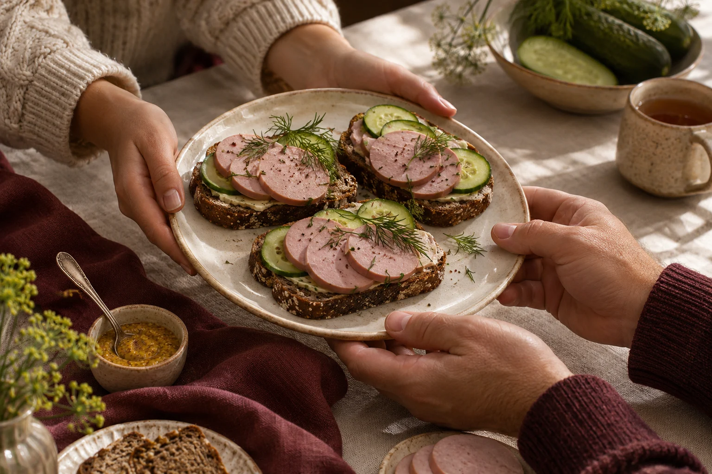
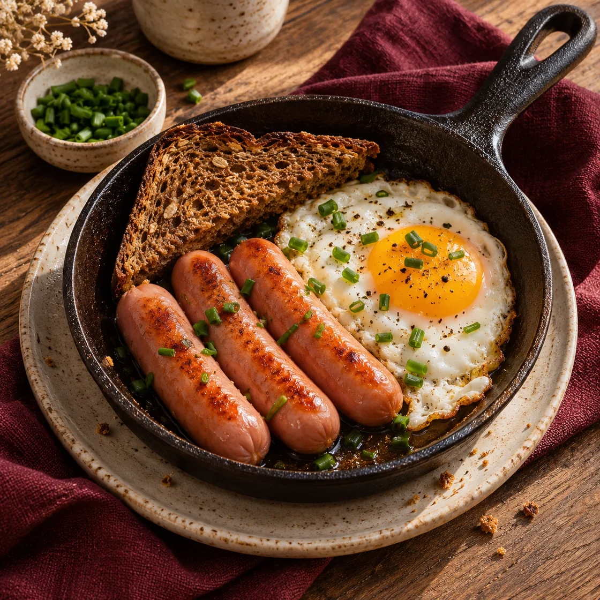
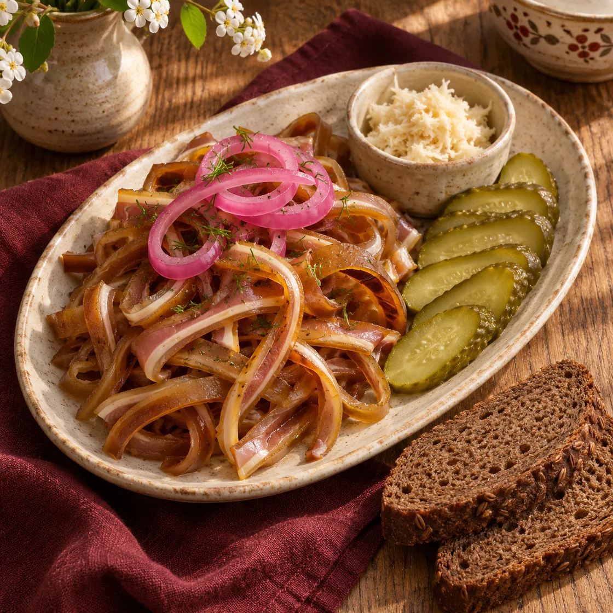

Ukraińskie smaki
Smak, który łączy.
Kilka plasterków na kanapkę, parówki na śniadanie albo przekąska dla gości. Co dziś podasz na stół?
Katalog produktów
Wybierz coś na stół
Wybierz produkt i zobacz, z czym podać go na śniadanie lub przekąskę.
Wizualizacje AI przedstawiają propozycje podania. Skład, alergeny i sposób przechowywania sprawdź na opakowaniu wybranego produktu.



Przy stole z Darnytskie
Co dziś podajemy?
W ukraińskiej kuchni dla jeszcze jednej osoby zawsze znajdzie się kromka chleba. Oto trzy pomysły na to, co na niej położyć albo podać obok.
Kanapka z chrupiącym ogórkiem
Posmaruj żytni chleb musztardą. Dodaj plasterki Śmietankowej, kiszony ogórek i kilka gałązek koperku.
Śniadanie prosto z patelni
Przygotuj parówki zgodnie z instrukcją na opakowaniu. Podaj z jajkiem sadzonym, szczypiorkiem i ciepłą grzanką.
Na półmisku dla gości
Do wędzonych uszu wieprzowych podaj marynowaną cebulkę, ogórki i chrzan w małej miseczce. Pieczywo połóż obok, żeby każdy mógł sięgnąć po kromkę.
W Polsce
Gdzie kupić?
- ŁÓDŹ93-120 Łódź, ul. Przybyszewskiego 176/178Wyznacz trasę
- SOSNOWIEC41-219 Sosnowiec, ul. Kosynierów 34Wyznacz trasę